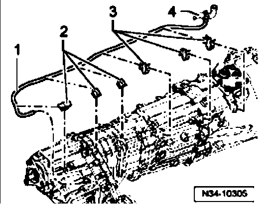

Transfer Case Ventilation Line, Routing
Transfer case ventilation line, routing

The ventilation line -1- for the transfer case runs over the transfer case and the transmission to the cooling system hose -4-.
The line is clipped into the holders -2- on the transfer case and the holders -3- on the transmission.
The illustration shows the line routing with a manual transmission. The routing for an automatic transmission is similar.